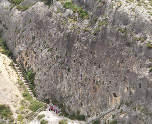

|
BOCAIRENT Poblada desde la antigüedad. Se han encontrados restos de asentamientos humanos del Neolítico en la Cueva del Vinalopó y de la Sarsa, así como diversos poblados iberos ubicados en pequeñas lomas de la zona. De época ibera destaca el llamado León de Bocairent y el yacimiento del Alt de Castellar con su “calzada” ibero-romana excavada en la roca, que forma parte de la actual Ruta Mágica.
En el Mas de El Collet,
se encontraron algunas monedas de origen fenicio. Recientemente, en las
excavaciones del nuevo puente, se han encontrado una moneda de origen
ibero. En el Mas del Pou, (Alfafara-Bocairent), destaca la necrópolis
tardorromana. Se encontraron numerosas de sepulturas excavadas en la roca,
También se halló un sarcófago romano, una gladius y un juego completo de
podera alnea y podera ferres.

|